리눅스마스터-1급 (2009-03-15 기출문제)
1과목: 리눅스 실무의 이해
1. 운영체제를 기능에 따라 분류할 경우 아래의 설명에 해당하는 제어 프로그램(control program)은 무엇인가?
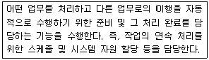
- 슈퍼바이저 프로그램(supervisor program)
- 작업 관리 프로그램(job management program)
- 데이터 관리 프로그램(data management program)
- 통신 관리 프로그램(communication management program)
(정답률: 93%)

2. LRU (Least Recently Used) 기법을 이용하여 페이지 교체 기법을 사용하는 시스템에서 새로운 페이지를 적재하고자 한다. 어떤 페이지를 교체 하여야 하는가?
- 가장 먼저 기록된 페이지를 교체한다.
- 가장 최근에 적게 사용된 페이지를 교체한다.
- 적재된 지 가장 오래된 페이지를 교체한다.
- 가장 오랫동안 사용되지 않을 페이지를 교체 한다.
(정답률: 69%)
3. 자유 소프트웨어는 무엇에 구속되거나 얽매이지 않아도 되는 소프트웨어를 뜻한다. 자유 소프트 웨어에 대한 설명으로 옳지 않은 것은?
- 프로그램의 작동 원리를 연구하고 이를 자신의 필요에 맞게 변경시킬 수 있는 자유
- 소프트웨어의 수정 및 수정본의 재배포는 인간이 해독 가능한 프로그램의 소스코드가 있어야만 가능
- 공익을 목적으로 프로그램을 복제하고 배포 할 수 있는 자유
- 개작과 배포를 허용하지 않는 상용 프로그램을 향상시키고 공익을 목적으로 무료로 배포할 수 있는 자유
(정답률: 74%)
4. 다음 중 자유소프트웨어의 분류 방법으로 옳지 않은 것은?
- 카피레프트 소프트웨어 : 소스코드의 개작 여부에 관계없이 원래의 배포 기준을 그대로 유지시켜야 하는 소프트웨어
- 공용 소프트웨어 : 저작권자가 저작권을 명시 적으로 포기했거나 저작권자를 알 수 없는 공개된 소프트웨어
- 프리웨어 : 배포는 허용되지 않지만 개작은 허용하는 소스코드가 공개되지 않는 소프트웨어
- 쉐어웨어 : 일정한 기간 동안 무료로 사용할 수 있게 하는 등의 부분적인 제한을 설정해서 배포하는 소프트웨어
(정답률: 72%)
5. 다음 중 리눅스 배포판 (Distribution)의 패키지라고 할 수 없는 것은?
- 슬랙웨어 (Slackware)
- 맨드레이크 (Mandrake)
- 데비안 (Debian)
- 솔라리스 (Solaris)
(정답률: 83%)
6. 다음 중 여러 대의 하드 디스크가 있을 때 동일한 데이터를 다른 위치에 중복해서 저장하는 방법은 무엇인가?
- SCSI
- RAID
- IDE
- EIDE
(정답률: 92%)
7. 각 운영체제 별 부트 매니저의 역할을 담당하는 파일이 잘못 짝지어진 것은?
- DOS : config.sys
- Windows98 : msdos.sys
- Linux(LILO) : /bin/lilo.conf
- Linux(GRUB) : /boot/grub/grub.conf
(정답률: 52%)
8. 다음 중 계층(tree) 구조를 사용하는 리눅스의 각 디렉토리 기능에 대한 설명이 틀린 것은?
- “/root” : 루트 디렉토리라고 부르며 리눅스 시스템에서 가장 최상위 디렉토리
- “/bin” : 리눅스에서 가장 기본이 되는 명령어들이 모여 있는 디렉토리
- “/sbin” : 시스템 관리(부팅, 복구, 보수 등)를 위한 명령어들이 모여 있는 디렉토리
- “/etc” : 리눅스 시스템의 각종 환경설정에 연관된 파일들과 디렉토리들을 가진 디렉토리
(정답률: 64%)
9. 레드햇 리눅스와 국내 리눅스 배포판에서 적용되는 부팅디스켓을 만드는 과정의 순서를 바르게 나열한 것은 무엇인가?
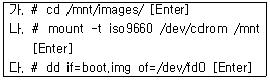
- 가-나-다
- 나-가-다
- 나-다-가
- 다-나-가
(정답률: 62%)
10. X 윈도우 시스템을 이루는 4가지 요소로 옳지 않은 것은?
- Server/Client
- X Protocol
- IPL(Initial Program Loader)
- Xlib, Xtoolkt
(정답률: 73%)
11. 다음 중 GNOME (GNU Network Object Model Environment)의 특징으로 옳지 않은 것은?
- 전용 윈도 매니저가 없는 대신에 대응 윈도매니저를 선택하여 사용한다. 따라서, 윈도 매니저가 바뀌더라도 데스크톱의 중요한 부분들은 바뀌지 않는다.
- GNOME과 호환되지 않는 프로그램들의 기능도 충분히 살릴 수 있도록 여러 가지 드래그 앤 드롭 프로토콜을 지원한다.
- CORBA(Common Object Broker Architecture)를 사용하여 소프트웨어들의 작성 언어나 실행 가능한 기계에 대하여 종속적인 동작이 가능 하다.
- 사용자가 원하는 방법으로 데스크톱 환경을 설정할 수 있다.
(정답률: 58%)
12. 리눅스 쉘(Shell)에 대한 설명으로 옳지 않은 것은?
- 각 운영체제와 사용자가 대화하는 중간 창구 역할을 한다.
- 리눅스에서 사용자와 운영체제가 통신하는 주요 수단이다.
- 쉘의 종류로는 sh, csh, ksh, Bash이 있다.
- 표준 유닉스 명령 인터프리터로서 사용자가 입력한 명령을 해석하지 못하고 단순히 커널에 넘겨준다.
(정답률: 91%)
13. 다음은 무엇에 관한 설명인가?
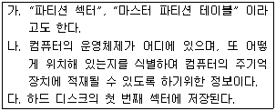
- 쉘 스크립터 (Shell Script)
- MBR (Master Boot Record)
- 커널 (Kernel)
- LILO (LInux LOader)
(정답률: 73%)
14. 다음 관리정보들을 포함하는 것은 무엇인가?
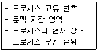
- 커널(Kernel)
- 쉘(Shell)
- GRUB
- 프로세스관리블록(PCB)
(정답률: 83%)
15. 다음 중 프로세스의 시간 할당량 종료와 관련하여 발생하는 인터럽트는 무엇인가?
- 시스템 호출 인터럽트(System Call Interrupt)
- 프로그램 검사 인터럽트(Program Check Interrupt)
- 콘솔 인터럽트(Console Interrupt)
- 클록 인터럽트(Clock Interrupt)
(정답률: 63%)
16. OSI7 Layer 물리계층에서 정의하는 것으로 옳지 않은 것은?
- 기계적 특성
- 계층적 특성
- 절차적 특성
- 전기적 특성
(정답률: 54%)
17. 광섬유를 구성하는 구성요소 중에서 클래딩(Cladding)의 역할은 무엇인가?
- 광섬유가 통과하는 통로역할을 한다.
- 외부충격으로부터 코어(Core)를 보호한다.
- 작은 굴절율의 투명한 덮개로 코어 외부를 싸고 있으며, 거울과 같은 역할을 수행하여 빛을 반사한다.
- 외부의 간섭을 방지하기 위해 금속박막 전도층으로 내부를 차단한다.
(정답률: 55%)
18. 다음 중 특별한 목적으로 예약된 IP 주소가 아닌 것은?
- 호스트ID 필드의 비트값이 모두 ‘0’인 IP주소는 일반 호스트에는 할당할 수 없는 IP주소로 브로드 케스트 주소이다.
- 호스트ID 부분의 모든 값이 ‘0’ 이거나 ‘1’인 것은 이용하지 않는다.
- 클래스를 나타내는 ‘앞부분 비트(Prefix bit)’를 제외한 네트워크 ID부분의 비트 값이 모두 ‘0’ 또는 ‘1’로 되어 있는 것은 이용하지 않는다.
- IP 주소 중에서 127.으로 시작되는 주소는 어떠한 호스트에서도 IP주소로 할당할 수 없는 소프트웨어 루프백 주소이다.
(정답률: 53%)
19. 다음 중 리눅스가 지원하는 네트워크 인터페이스의 종류가 아닌 것은?(문제 오류로 실제 시험에서는 모두 정답 처리되었습니다. 여기서는 1번을 누르면 정답 처리 됩니다.)
- lo : 루프백 인터페이스
- ppp[number] : SLIP 인터페이스
- eth[number] : 이더넷 인터페이스
- plip[number] : Parallel 라인 인터페이스
(정답률: 79%)
20. 다음 중 리눅스 시스템에서 네트워크 상태를 확인 하는 명령어와 관련이 없는 것은?
- ifconfig
- netconfig
- linuxconf
- netstat
(정답률: 72%)
2과목: 리눅스 시스템 관리
21. 다음 중 USB 마우스가 제대로 설정되어 있지 않을 때 확인하는 방법이 아닌 것은?
- 마우스가 쉘에 의해 제대로 인식되는지 확인 한다.
- 마우스가 사용할 /dev 항목을 설정해야 한다.
- more/proc/interrupts를 실행하여 USB에 관한 내용을 확인한다.
- UHCI에서는 /proc/interrupts를 살펴보는 시간동안 지연된 시간(초)를 빼야한다.
(정답률: 37%)
22. 다음 중 키보드의 설정이 잘못되어 있을 때 확인 하는 방법으로 옳지 않은 것은?
- /usr/lib/kbd/keytables에서 키보드의 종류에 따라서 적당한 키 테이블을 선택한다.
- 키보드를 설정할 권한을 얻기 위해 ~#chmod 666 /usr/lib/kbd/ 명령을 실행한다.
- /etc/profile에 키보드의 반복 비율과 지연 시간을 설정한다.
- 이탈리아 키보드의 경우 /etc/sysconfig/keyboard를 편집하여KEYTABLE="usr/lib/kbd/keytables/it.map"와 같이 되도록 한다.
(정답률: 37%)
23. 리눅스에서 pci 버스와 설치한 pci카드, 그리고 pci 버스를 사용하는 다른 장치에 대한 정보를 얻기 위하여 필요한 사항으로 알맞은 것은?
- make mrproper 명령어를 실행한다.
- Ctrl + Alt + F1을 눌러 가상 터미널을 띄운다.
- /proc/pci 파일을 열어 내용을 확인 할 수 있다.
- /XF86Config 파일을 실행하여 내용을 확인 할 수 있다.
(정답률: 52%)
24. 다음 DMA에 대한 설명 중 옳지 않은 것은?
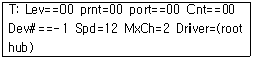
- T: 시작하는 행은 토폴리지(Topology)이다.
- Lev : 장치의 레벨을 표시하며 레벨 00은 루트 허브를 표시한다.
- prnt : 프린트 포트로의 데이터 전송 표시이다.
- Port : 상위 장치의 포트이며 00은 각 장치의 첫째 포트이다.
(정답률: 40%)
25. 다음 중 직접 메모리 엑세스 (Direct Memory Access)에 대한 설명으로 옳지 않은 것은?
- 장치가 CPU로부터 컴퓨터 메인 버스를 계승하고 바이트 열을 메인 메모리에 직접 전송하는 것이 허가되는 장소이다.
- ISA 버스상의 장치가 DMA를 하려고 할 때 인터럽트를 이용해 처리한다.
- DMA 채널은 메인 버스를 모두 사용한다.
- DMA를 요구하기 위해서는 각 채널의 현재 상태를 저장하고 있는 장치가 물리적 장치의 디스크에 저장된다.
(정답률: 36%)
26. 컴파일러를 이용하여 프로그램 소스로부터 수행 가능한 바이너리 코드를 만드는 과정은 무엇인가?
- 컴파일(Compile)
- 디버깅(Debugging)
- 로딩(Loading)
- 이식성(Porting)
(정답률: 73%)
27. 다음 중 리눅스 커널을 계속적으로 업그레이드하여 컴파일 하는 이유로 옳지 않은 것은?
- 새로운 하드웨어의 지원
- 시스템 관리 능력의 개선
- 속도의 개선
- 패키지프로그램 개발
(정답률: 72%)
28. "리눅스 커널의 패치가 성공했다면, 패치 대상이 된 파일의 원본은 이름 끝에 ( ㉮ )를 붙혀 백업되고 패치과정에서 문제가 생겨 실패하였다면, 실패한 파일 이름 뒤에 ( ㉯ )를 붙인 파일을 만든다." 다음 ( ) 안에 들어갈 내용으로 알맞은 것은?(순서대로 ㉮ ㉯)
- 성공 : *.rej, 실패 : *.orig
- 성공 : *.orig, 실패 : *.rej
- 성공 : *.orig, 실패 : *.gz
- 성공 : *.gz, 실패 : *.rej
(정답률: 66%)
29. 다음 중 리눅스 커널 컴파일 환경 설정을 위한 인터페이스가 아닌 것은?
- make config
- make fatchconfig
- make menuconfig
- make xconfig
(정답률: 68%)
30. 다음 중 리눅스 주변장치의 설정을 위해 사용되는 명령어로 옳지 않은 것은?
- 새로운 디스크 포맷하기 : #mkfs.ext3 /dev/hdb1
- 새로운 디스크에 파티션 만들기 : #fdisk /dev/hdb
- 새로운 디스크 마운트 하기 : #mkdir /new-disk
- 리눅스 이외의 OS(DOS)가 사용하는 파티션 언 마운트 하기 : # umount /dos
(정답률: 78%)
31. 다음의 루트 계정에 대한 설명 중 틀린 것은?
- 루트 계정이 되면 시스템을 제한 없이 운영 할 수 있다.
- 루트 사용자에서 일반 사용자로 바꾸려면 “su” 명령을 사용한다.
- 관리자라면 처음부터 루트 계정으로 로그인해서 작업하는 것이 권장된다.
- 루트 계정에서 일정시간 동안 사용하지 않으면 자동으로 로그아웃 되도록 하는 게 좋다.
(정답률: 75%)
32. 현재 쉘을 사용하는 사용자 계정을 확인하기 위한 명령으로 알맞은 것은?
- whoami
- cat /etc/passwd
- myinfo
- login
(정답률: 69%)
33. 리눅스에서 제공하는 쉘의 종류를 알아보기 위한 명령으로 알맞은 것은?
- cat /etc/shells
- ls /etc/shells
- /bin/bash
- ls /bin/shells
(정답률: 57%)
34. 다음 그룹 계정 관리에 대한 설명 중 알맞은 것은?
- 그룹이 삭제되어도 그 그룹에 포함된 사용자의 권한은 절대 영향을 받지 않는다.
- 사용자가 속한 그룹을 확인하기 위해서는 groups 명령을 사용한다.
- 특정 그룹에 권한을 지정하여 그 그룹 내에 사용자들을 포함시키는 것 보다 사용자 각각에 대해 권한을 지정하는 것이 더 편리하다.
- “/etc/passwd” 파일과 “/etc/group” 파일을 직접 변경하여 그룹을 변경하는 것이 좋다.
(정답률: 49%)
35. su 명령으로 사용자를 변경할 때 변경하는 사용자의 쉘 환경으로 대체하기 위한 명령으로 가장 알맞은 것은?
- su -c tester
- su tester
- su -l tester
- su -s tester
(정답률: 26%)
36. 다음 리눅스의 파일에 대한 설명 중 틀린 것은?
- 종류는 일반 파일, 디렉토리, 특수 파일 등이 있다.
- 일반 파일은 사용자가 평소에 사용하는 텍스트 파일들을 말하며 바이너리 파일은 제외한다.
- 디렉토리는 다른 파일들을 조작하고 액세스하는 데 필요한 정보를 가지고 있다.
- 특수 파일은 리눅스가 자원을 관리하는 장치(device)를 가리킨다.
(정답률: 42%)
37. 다음 중 .bash_profile 파일에 대해 소유자, 그룹, 다른 사용자 모두에게 읽기 허가권을 부여 하는 명령은 무엇인가?
- chmod a+r .bash_profile
- chmod g-rwx .bash_profile
- chmod g+rw .bash_profile
- chmod a-w .bash_profile
(정답률: 68%)
38. 다음 중 리눅스 파일 시스템의 복구에 대한 설명으로 틀린 것은 무엇인가?
- fsck 명령은 file system consistency check 의 약자로 파일 시스템을 조사하여 손상된 파일을 출력 할 뿐 복구하지는 않는다.
- 최초에 파일 시스템을 재구축한 후에는 sync 명령을 수행하고 fsck 명령을 수행한 후 반드시 재부팅해야 한다.
- 복구 쉘은 모든 파일 시스템의 마운트를 해제하고 루트 파일 시스템을 “읽기전용”으로 마운트 한다.
- 복구할 수 없는 파일 시스템의 문제에 대비하여 응급 복구 디스크와 백업 본을 준비해 두어야 한다.
(정답률: 63%)
39. 리눅스 2.0.x 이상 버전의 커널을 가진 리눅스에서 지워진 파일을 복구하는 단계들이 기술된 것 중 가장 올바른 것은?
- 가장 먼저, 지워진 파일이 있는 파티션이 언마운트 되지 않도록 하고 혹시 언 마운트 되었다면 다시 마운트 한다.
- 지워진 파일이 있는 파티션 원본과 동일한 크기의 또 다른 비어있는 파티션에 dd 명령을 사용하여 내용을 복사한다.
- 복사본을 만들었으면 원본을 가지고 debugfs를 읽고 쓰기 모드로 실행하여 새로운 디렉토리를 만드는 작업부터 수행한다.
- 파일들의 첫 문자들을 입력받아 파일들을 복원하고 아이노드(i-node)들을 계산한다.
(정답률: 29%)
40. 다음 리눅스 명령어에 대한 설명 중 틀린 것은?
- mount - 저장이나 입출력을 위한 하드웨어가 디렉토리에 연결된 것을 해제한다.
- mkfs - 파일 시스템을 생성하는 명령어이다.
- touch - 새로운 파일 생성하고, 파일의 액세스 시간이나 갱신 시간을 수정한다.
- mkswap - 스왑 영역을 만드는 명령이다.
(정답률: 82%)
41. 백그라운드(background) 및 포그라운드(foreground) 프로세스에 대한 다음 설명 중 틀린 것은?
- 백그라운드 프로세스는 대부분 CTRL-Z 키 입력을 받으면 포그라운드로 전환된다.
- 쉘 프롬프트에서 명령을 입력하고 엔터를 치면 대부분 포그라운드로 프로세스를 띄우는 것이다.
- 포그라운드로 실행 중인 프로세스는 대부분 CTRL-C 키로 강제로 종료시킬 수 있다.
- 쉘에서 백그라운드로 프로세스를 실행시키면 그 프로세스의 종료 여부와 관계없이 쉘은 다른 명령을 받을 수 있다.
(정답률: 58%)
42. 다음 중 프로세스가 종료되는 경우에 발생하는 사건들에 해당하지 않는 것은?
- 그 프로세스가 속한 프로세스 그룹에 hangup 신호를 보낸다.
- 그 프로세스의 부모 프로세스와 모든 자식 프로세스들에게 종료 신호를 보낸다.
- 열린 파일들을 닫고 디렉토리를 반납한다.
- 프로세스를 종료하기 위해서는 exit() 시스템 호출을 수행한다.
(정답률: 32%)
43. 프로그램이 실행 중에도 hangup 신호와 무관하게 계속 실행되게 하기위한 방법으로 알맞은 것은?
- nohup 명령 뒤의 인수로 프로그램을 실행한다.
- nice 명령으로 스케쥴링 우선권을 가장 높은 값인 -20으로 조정한다.
- kill 명령으로 SIGHUP 신호를 보낸다.
- crontab 명령으로 그 프로세스의 PID를 /etc/crontab 테이블에 신규로 저장한다.
(정답률: 48%)
44. cron 명령이 필요에 따라 실행결과를 사용자에게 메일로 보내기 위한 방법으로 알맞은 것은?
- /etc/crontab 파일의 ADMIN-E-MAIL 필드에 메일을 받을 사용자 이메일 주소를 지정한다.
- /etc/crontab 파일의 MAILTO 필드에 메일을 받을 사용자 이메일 주소를 지정한다.
- crontab -e 명령을 실행하면 프로그램이 자동으로 이메일을 보낼 사용자 주소를 묻는 데 그 때 입력한다.
- crond 데몬을 실행하는 rc.local 의 ADMIN-EMAIL 필드에 메일을 받을 사용자 이메일 주소를 지정한다.
(정답률: 33%)
45. 다음 fork()와 exec() 시스템 호출에 대한 설명 중 틀린 것은?
- fork() 시스템 호출은 어떤 프로세스가 자신의 사본을 생성하는 데 사용한다.
- exec() 시스템 호출은 프로세스의 메모리 공간을 수행 가능 파일로 대체하여 다른 프로그램을 호출한다.
- exec() 시스템 호출을 수행해도 시스템 호출을 한 프로세스의 특성이 변하지 않는 한 전체 시스템 내의 프로세스 수는 동일하다.
- fork() 시스템 호출을 하면 자식 프로세스의 PID가 부모 프로세스에게 리턴되고 자식 프로세스는 부모 프로세스의 PID를 받는다.
(정답률: 38%)
46. 다음 rpm 명령에 대한 설명 중 틀린 것은?
- rpm -i foobar-1.0-1.i386.rpm : 파일을 통해 foobar 패키지를 설치한다.
- rpm -i ftp://ftp.foobar.com/pub/redhat/foobar-1.0-1.i386.rpm : FTP를 통해 foobar 패키지를 설치 한다.
- rpm -qa : 설치된 모든 패키지의 작동을 중단 시킨다.
- rpm -e mod_perl : mod_perl 패키지를 제거 한다.
(정답률: 70%)
47. 다음 dpkg 명령에 대한 설명 중 틀린 것은?
- dpkg -l : dpkg의 가능한 옵션들을 출력한다.
- dpkg --info foobar.deb : foobar 패키지에 대한 정보를 출력한다.
- dpkg --contents foobar.deb : foobar 패키지에 들어있는 파일들을 출력한다.
- dpkg --unpack foobar.deb : foobar 패키지를 풀기만 하고 설치하지 않는다.
(정답률: 49%)
48. 다음은 Makefile의 한 부분이다. ( )안에 들어갈 문자로 알맞은 것은?
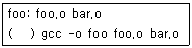
- 탭 문자 ('\t')
- 스페이스 문자 (' ')
- '>' 문자
- '~' 문자
(정답률: 52%)
49. 다음 gcc의 옵션들 중 출력파일의 이름을 정하기 위한 옵션으로 알맞은 것은?
- -I
- -L
- -c
- -o
(정답률: 57%)
50. 다음 중 주어진 .tar 묶음 파일을 해제하여 풀어 주는 tar 명령으로 알맞은 것은?
- tar xvf test.tar
- tar cvf test.tar
- tar tvf test.tar
- tar uvf test.tar
(정답률: 64%)
51. 다음 로그 파일과 그에 대한 설명이 알맞게 짝지 어진 것은?
- 시스템 로그(/var/log/messages) - 리눅스 커널 로그 및 주된 로그
- 보안 로그(/var/log/secure) - 시스템 부팅 시 로그
- 부팅 로그(/var/log/boot.log) - 웹 사이트 방문 기록에 대한 로그
- 액세스 로그(/usr/local/apache/logs/access_log) - inetd에 의한 로그
(정답률: 69%)
52. syslogd 데몬을 실행하고 종료하는 방법에 대한 설명 중 틀린 것은?
- “/sbin/syslogd” 데몬을 실행시키고 종료시키는 것은 “/etc/rc.d/init.d/syslog” 라는 스크립트를 통해서 하는 것이 좋다.
- 로그 데몬을 처음 시작할 때는 스크립트가 있는 디렉토리에서 “./syslog start” 명령으로 실행시킨다.
- 로그 데몬을 재시작할 때는 스크립트가 있는 디렉토리에서 “./syslog replay” 명령으로 실행 시킨다.
- 로그 데몬을 종료시킬 때는 스크립트가 있는 디렉토리에서 “./syslog stop” 명령으로 실행 시킨다
(정답률: 60%)
53. 부팅시 문제점을 확인하기 위하여 부팅 메시지를 출력하기 위한 명령으로 알맞은 것은?
- dmesg | less
- cat /var/log/messages | grep "Boot" | less
- /etc/rc.d/init.d/syslog showboot
- bootmesg | less
(정답률: 49%)
54. 다음 중 부트 로더 (boot loader)를 보안하는 방법에 대한 설명으로 알맞은 것은?
- ROM-BIOS의 사용자 패스워드와 어드민 패스워드를 설정한다.
- LILO를 사용하면 password와 restricted 명령어를 설정하고 GRUB에서는 password 명령을 설정한다.
- xlock과 vlock 명령을 사용한다.
- 부트 로그인 /var/log/boot.log의 파일 퍼미션을 사용자(user)만 쓸 수 있도록 한다.
(정답률: 33%)
55. 다음 중 일반 사용자나 슈퍼 유저의 접근을 제한하는 방법으로 틀린 것은?
- 사용하지 않는 사용자 계정은 삭제한다.
- 책임 관계가 불분명해지므로 공유하는 사용자 계정은 만들지 않도록 한다.
- /etc/securetty 파일을 설정하여 root로 로그인 하지 못하게 한다.
- /etc/nologin 파일을 만들어서 필요 없는 사용자의 접근을 막는다.
(정답률: 39%)
56. tripwire 명령을 사용하는 방법에 대한 설명 중 틀린 것은?
- 무결성 검사를 위해서 “tripwire --check”를 입력한다.
- 이메일 경고 기능을 테스트하기 위해서는 “tripwire --test --email admin@mytest.com”을 입력한다.
- 주기적인 점검을 하기 위해서는 관리자가 주기적으로 tripwire 프로그램을 실행해 줄 수 밖에 없다.
- 데이터베이스와 리포트 파일을 텍스트로 출력하기 위해서는 “twprint --print-dbfile > db.txt”을 입력한다.
(정답률: 56%)
57. 다음 중 tripwire에 대한 설명으로 틀린 것은?
- tripwire는 MD5, SHA, CRC-32등의 다양한 암호화 함수를 제공한다.
- 두 호스트간의 통신 암호화와 사용자 인증을 위해 공개키 암호기법을 사용한다.
- 파일들에 대한 데이터베이스를 만들어 불법적인 외부 침입자에 의한 파일 변조여부를 판별할 수 있다.
- tripwire는 기본적으로 /etc/tripwire디렉토리에 설치된다.
(정답률: 48%)
58. 다음 백업 요령 중 가장 알맞지 않은 것은?
- 2년 넘게 보관된 백업 테이프들은 절대적으로 필요 없기 때문에 체계적으로 폐기한다.
- 자료의 가치에 따라 다른 백업 전략을 취한다.
- 백업 테이프는 번갈아 가면서 사용한다.
- 백업을 한 후에는 백업 테이프에 쓰기 방지를 해 둔다.
(정답률: 70%)
59. 다음 cpio 명령에 대한 설명 중 틀린 것은?
- 바이트 스와핑이 가능하다.
- 파이프를 통해 다른 프로그램으로 데이터를 넘겨 줄 수 있다.
- 네트워크를 통한 백업은 지원하지 않는다.
- cpio 명령만 이용하여 디렉토리 트리를 옮길 수 있다.
(정답률: 32%)
60. 다음 rdist 명령에 대한 설명 중 틀린 것은?
- 여러 호스트에 파일들이 동일하도록 유지시키는 시스템 관리 명령어이다.
- rdist는 파일을 복제할 때 기본적으로 ssh를 사용하여 통신하며 다른 프로그램의 사용이 불가능하다.
- rdist 명령어를 사용하기 위해서는 “/etc/hosts.equiv” 파일과 “/.rhosts” 파일을 원하는 host와 사용자에 맞게 편집해 주어야 한다.
- 복수의 시스템들 사이에 복제, 변경되는 파일들만 서로 갱신하면서 중요한 파일들의 변경 사항을 감시할 수 있다.
(정답률: 52%)
3과목: 네트워크 및 서비스의 활용
61. 동적인 웹페이지 및 웹 사용자들의 참여가 가능한 사이트로 구성하기 위해 사용되는 CGI(Common Gateway Interface)에 대한 설명으로 틀린 것은?
- CGI 프로토콜은 단순해서 사용하기가 간단하다.
- 여러 개의 CGI 스크립트를 동작시키면 서버내의 메모리를 많이 차지한다.
- CGI의 스크립트는 제한된 언어로만 코딩될 수 있다.
- CGI 스크립트의 작성에 많이 사용되는 언어로 초기에는 C나 perl이 사용되었으나 최근에는 PHP, ASP 등이 사용되고 있다.
(정답률: 74%)
62. 서버관리자 홍길동은 아파치를 설치하여 웹서버를 구성하고자 한다. 아파치 웹사이트에 접속해보니 3가지 버전으로 제공되고 있다. 다음 조건이라면 가장 적합한 아파치 버전은?
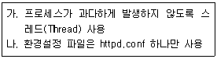
- 아파치 1.3
- 아파치 2.0
- 아파치 2.2
- 3가지 버전 모두 가능
(정답률: 46%)
63. 운영 중인 아파치 웹서버의 성능을 테스트(Benchmarking)하고자 한다. 이 경우 사용할 수 있는 명령어로 알맞은 것은?
- ab
- apxs
- htdigest
- rotatelogs
(정답률: 33%)
64. 아파치 웹서버를 설치하고 하나의 IP주소에 여러 도메인을 부여하는 가상 호스트를 설정하였다. httpd 명령어를 사용하여 가상호스트 관련 설정을 확인하고자 할 때 사용해야 할 옵션으로 알맞은 것은?
- -d
- -S
- -f
- -X
(정답률: 36%)
65. 아파치 환경 설정파일인 httpd.conf에서 동시에 접속할 수 있는 클라이언트의 수를 지정하는 항목으로 알맞은 것은?
- Clients
- Instances
- MaxInstances
- MaxClients
(정답률: 49%)
66. 아파치 환경 설정파일인 httpd.conf에서 웹 문서(html파일)중 가장먼저 읽어 들이는 파일명을 지정하는 항목은?
- DocumentRoot
- ServerAdmin
- DirectoryIndex
- ServerRoot
(정답률: 47%)
67. 아파치와 PHP, MySQL을 연동 설치한 후 test.php를 만들어 확인하고자 한다. 다음 ( )에 들어갈 내용으로 알맞는 것은?
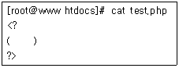
- phpinfo();
- testphp();
- phptest() ;
- testinfo();
(정답률: 44%)
68. MySQL을 아래의 옵션으로 configure해서 설치가 된 상태이다. MySQL 관리자로부터 재설치할 예정이니 데이터만 tar로 백업해달라는 요청을 받았다. 백업해야할 디렉토리로 알맞은 것은?
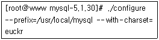
- /usr/local/mysql/data
- /usr/local/mysql/var
- /usr/local/mysql/share
- /usr/local/mysql/bin
(정답률: 42%)
69. 아파치, PHP, MySQL 연동 웹서버를 구성하고자 한다. 정보 유출 방지를 위한 보안 웹서버를 구성하기 위해 추가로 설치해야 되는 프로그램으로 알맞은 것은?
- Jserv
- SWAT
- ZendOptimizer
- OpenSSL
(정답률: 59%)
70. 다음은 삼바 서버의 설정 파일인 smb.conf파일의 일부이다. 다음의 설정과 관련된 내용 중 가장 알맞은 것은?
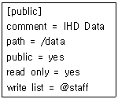
- staff 그룹에 속한 삼바사용자 posein은 /data에 읽기만 가능하다.
- 삼바 사용자인 yuloje는 /data에 접근하여 파일을 생성할 수 있다.
- /data 디렉토리는 staff라는 사용자를 제외하고는 파일 생성이 가능하다.
- /data 디렉토리는 모든 삼바 유저가 접근가능 하지만 파일 생성은 staff그룹에 속한 사용자들만 가능하다.
(정답률: 56%)
71. 삼바 서버에서는 초기 SMB(Server Message Block)프로토콜을 사용했으나 지금은 클라이언트/서버 모델을 기반으로 하는 이 프로토콜을 사용한다. 다음 중 알맞은 것은?
- NIS
- CIFS
- RPC
- NFS
(정답률: 34%)
72. 리눅스 클라이언트에서 윈도우 서버에 공유되어 있는 폴더를 확인할 때 사용하는 삼바관련 명령어는?
- smbclient
- smbstatus
- testparm
- smbmount
(정답률: 40%)
73. NFS 서버의 설정 파일인 /etc/exports의 옵션 중 클라이언트 접근 관련 설정인 root_squash와 all_squash의 설명 중 알맞은 것은?
- root로 접근시 root_squash는 nobody권한으로 인정되고, all_squash는 root권한으로 인정된다.
- root로 접근시 root_squash는 root권한으로 인정되고, all_squash는 nobody권한으로 인정된다.
- 일반사용자로 접근시 root_squash는 nobody 권한으로 인정되고, all_squash는 해당 계정 권한으로 인정된다.
- 일반사용자로 접근시 root_squash는 해당 계정 권한으로 인정되고, all_squash는 nobody계정으로 인정된다.
(정답률: 45%)
74. NFS 서버와 클라이언트간의 통신 방법으로 RPC(Remote Procedure Call)를 사용하는데, 이 프로토콜을 사용하기 위해 서버 및 클라이언트에 반드시 동작시켜야 할 데몬은 무엇인가?
- xinetd
- portmap
- autofs
- tcpd
(정답률: 46%)
75. NFS 서버에서 클라이언트의 호스트 이름과 마운트된 디렉토리를 확인할 때 사용하는 명령어는?
- showmount
- nfsstat
- exportfs
- nhfsstone
(정답률: 57%)
76. 다음은 ProFTPD 서버의 설정 파일인 proftpd.conf 파일의 일부이다. 다음 설정과 관련된 내용 중 틀린 것은?
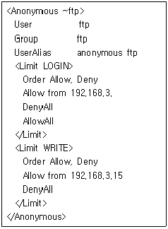
- 192.168.3.15에서 접속하는 익명사용자는 홈디렉토리에 있는 파일 다운로드가 가능하다.
- 192.168.3.15에서 접속하는 익명사용자는 홈디렉토리에 파일 업로드가 가능하다.
- 192.168.3.22에서 접속하는 익명사용자는 홈디렉토리에 있는 파일 다운로드만 가능하다.
- 접속한 IP주소에 상관없이 접속한 익명사용자는 로그인 가능하다.
(정답률: 53%)
77. 운영 중인 ProFTPD의 root 접속을 허가하자고 한다. 다음 중 proftpd.conf 파일에 추가해야 할 항목으로 알맞은 것은?
- RootLogin on
- RootLogin off
- PermitRootLogin yes
- PermitRootLogin no
(정답률: 39%)
78. proftpd.conf 파일에서는 <Limit>를 사용하여 <Directory>와 <Anonymous>에 적용된 설정을 제한 할 수 있다. 다음 중 클라이언트에서 서버로 파일을 전송할 경우를 제한하고자 할 때 사용해야 할 command로 알맞은 것은?
- LOGIN
- RETR
- STOR
- DIRS
(정답률: 29%)
79. 다음은 메일 서비스와 관련된 프로그램들이다. 다음 나열된 프로그램 중 나머지 3개와 종류가 다른 프로그램은?
- Procmail
- Qmail
- Postfix
- Sendmail
(정답률: 37%)
80. Sendmail로 메일 서버를 구축하고 POP3 서비스를 제공하고자 한다. 방화벽에서 허가해야 할 포트로 알맞은 것은?(단, 이 메일 서버는 기본 well-known 포트를 사용하고 있다.)
- 23, 110
- 25, 110
- 23, 143
- 25, 143
(정답률: 58%)
81. 서버 관리자인 홍길동은 리눅스 시스템 및 Sendmail 서버를 관리하고 있다. 고객지원부서에서 webmaster계정으로 들어오는 메일을 고객 지원부서 전체 사원이 받을 수 있도록 요청이 와서 /etc/aliases에 등록하였다. 다음 중 설정 후 반드시 실행시켜야 할 명령어는?
- mail -v
- mailq
- sendmail -bp
- newaliases
(정답률: 45%)
82. Sendmail을 이용하여 메일 서버를 구축하고 있다. 다음 중 사용할 도메인을 등록하는 파일로 알맞은 것은?
- /etc/mail/sendmail.mc
- /etc/mail/virtusertable
- /etc/mail/local-host-names
- /etc/aliases
(정답률: 46%)
83. Sendmail을 이용하여 메일서버를 운영하고 있다. spammer@ihd.or.kr에서 전송되는 메일을 차단하려 할 때 사용하는 파일로 알맞은 것은?
- /etc/mail/access
- /etc/mail/virtusertable
- /etc/mail/local-host-names
- /etc/aliases
(정답률: 65%)
84. Sendmail로 메일서버를 운영 중인데 외부로 메일을 전송하면 설정한 발신자 도메인이 제대로 인식 되지 못하는 경우가 발생하였다. 이 경우 sendmail.cf에서 해당 도메인을 지정할 때 사용하는 항목으로 알맞은 것은?
- Cw
- Fw
- Dj
- Dn
(정답률: 30%)
85. Sendmail로 메일서버를 운영 중에 있다. 일반 계정 사용자가 현재 운영 중인 서버로 들어오는 메일을 다른 메일서버로 전송하고 싶다는 요청이 들어왔다. 이 경우에 사용하는 파일로 알맞은 것은?
- .rhosts
- .exrc
- .forward
- .message
(정답률: 52%)
86. 다음 중 메일서버에서 외부로 전송되는 메일이 대기하는 디렉토리로 알맞은 것은?
- /etc/mail/spool
- /var/spool/mail
- /etc/mail/mqueue
- /var/spool/mqueue
(정답률: 39%)
87. 다음 중 취약한 전자우편의 보안을 강화하기 위해 사용되는 암호화 방법으로 알맞은 것은?
- SSL(Secure Sockets Layer)
- PAM(Pluggable Authentication Module)
- MD5
- PGP(Pretty Good Privacy)
(정답률: 43%)
88. 다음 /etc/xinetd.conf 파일의 내용 중 cps에 대한 설명으로 알맞은 것은?
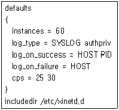
- 초당 연결수가 30개 이상이 되면 25초 동안 연결을 비활성화 한다.
- 초당 연결수가 25개 이상이 되면 30초 동안 연결을 비활성화 한다.
- 1개 IP주소 당 접속 수가 25개 이상이 되면 30초 동안 연결을 비활성화 한다.
- 1개 IP주소 당 접속 수가 30개 이상이 되면 25초 동안 연결을 비활성화 한다.
(정답률: 52%)
89. 다음 /etc/xinetd.d/telnet 파일의 내용 중 telnet 서비스를 203.247.50 네트워크 대역에 속한 호스트들만 접속할 수 있도록 허가하고자 할때 추가 해야 될 내용으로 알맞은 것은?
- only_from = 203.247.50.0
- no_access = 203.247.50.0
- only_from = 203.247.50.0/255.255.255.0
- no_access = 203.247.50.0/255.255.255.0
(정답률: 29%)
90. 다음 중 DNS 서버의 존(reverse zone) 파일에서 메일 서버 구성에 사용되는 레코드로 알맞은 것은?(문제 오류소 실제 시험에서는 1, 2번이 정답 처리되었습니다. 여기서는 1번을 누르면 정답 처리 됩니다.)
- MX
- PTR
- CNAME
- NS
(정답률: 73%)
91. 다음은 DNS서버의 설정 파일인 /etc/named.conf 파일의 일부이다. 다음의 설정과 관련된 내용 중 알맞은 것은?
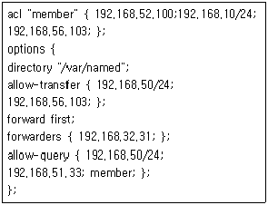
- 192.168.51.33 주소를 갖는 호스트는 보조 네임 서버로 구성 가능하다.
- 외부에서 질의 요청시 192.168.32.31에 넘기고, 만약 질의응답을 못하면 이 서버가 응답해준다.
- 192.168.56.103 주소를 갖는 호스트는 보조 네임서버로 구성 가능하지만, 질의는 할 수 없다.
- 192.168.10.10 주소를 갖는 호스트는 이 서버에 질의를 할 수 없다.
(정답률: 36%)
92. 프록시(Proxy)서버를 구성하기 위해 Squid를 소스로 설치한 뒤 환경설정까지 끝낸 상태이다. Squid에서 사용할 디렉토리를 생성하기 위해 squid 명령어를 이용하는데, 이 때 사용하는 옵션으로 알맞은 것은?
- -c
- -C
- -z
- -Z
(정답률: 23%)
93. NIS(Network Information System)서버를 구성한 후 호스트(Host) 검색시 NIS를 이용하도록 설정 할 때 사용하는 파일로 알맞은 것은?
- /etc/services
- /etc/host.conf
- /etc/fstab
- /etc/resolv.conf
(정답률: 25%)
94. 다음은 DHCP 서버의 설정 파일인 dhcpd.conf 파일의 일부이다. DHCP를 이용하는 클라이언트에게 할당되는 게이트웨이 주소로 알맞은 것은?
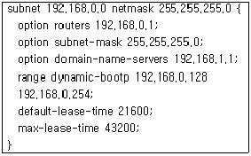
- 192.168.0.1
- 192.168.1.1
- 192.168.0.128
- 192.168.0.254
(정답률: 50%)
95. 다음의 CVS관련 명령어 중 로컬(Local)에서 작업한 프로젝트 파일을 CVS서버에 반영시키기 위해 사용하는 명령어는?
- import
- update
- commit
- checkout
(정답률: 53%)
96. 다음 스크립트는 DOS(Denial of Service)공격 중 어떤 유형의 공격인가?
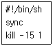
- 프로세스 만들기
- 디스크 채우기
- 모든 프로세스 죽이기
- 메모리 고갈
(정답률: 67%)
97. 정상적인 기능을 하는 프로그램으로 가장하여 프로그램내에 숨어서 의도하지 않는 기능을 수행하는 프로그램의 코드 조각을 무엇이라 하는가?
- 허니팟(Honeypot)
- 버퍼 오버플로(Buffer Overflow)
- DMZ
- 트로이목마(Trojan Horse)
(정답률: 73%)
98. 다음의 내용으로 서버를 운영하려면 iptables의 어느 사슬(chain)에서 정책 설정을 해야 하는가?
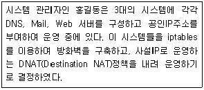
- FORWARD
- PREROUTING
- INPUT
- POSTROUTING
(정답률: 29%)
99. 시스템 관리자인 홍길동은 SSH서버를 운영 중이다. 많은 계정 중 특정 계정만 서버에 접속 할 수 있게 하려고 할 때 사용하면 유용한 것은?
- GnuPG
- PAM
- VPN
- TCP wrapper
(정답률: 38%)
100. 다음은 리눅스에서 사용되는 보안 프로그램에 대한 설명이다. 어떠한 프로그램에 대한 설명인가?
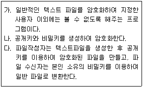
- GnuPG
- PAM
- VPN
- TCP wrapper
(정답률: 33%)